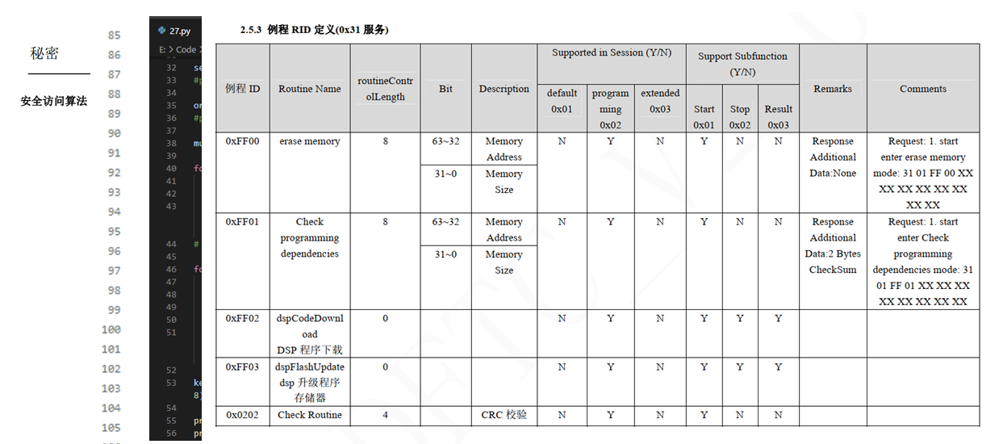
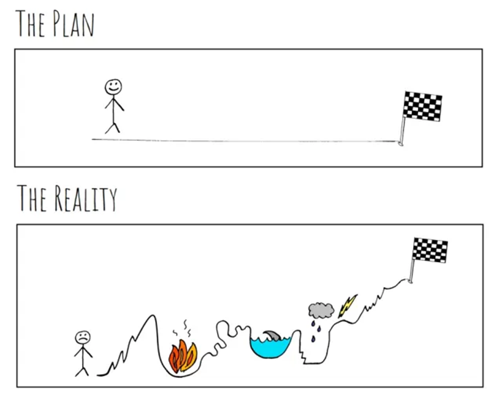
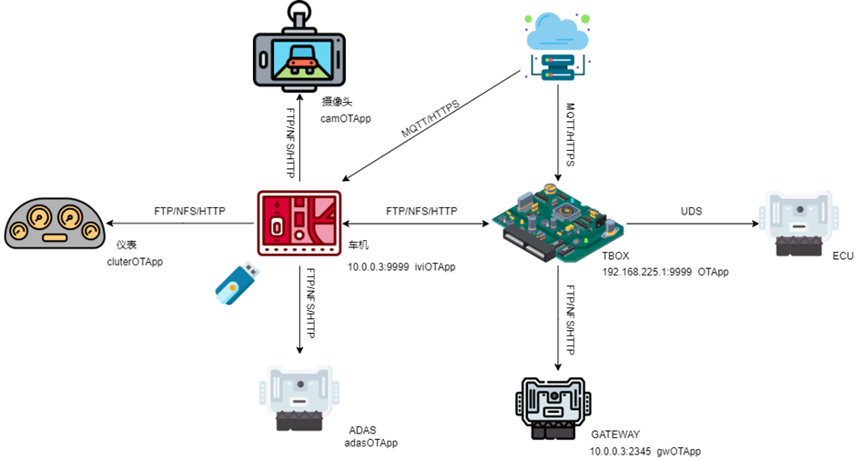
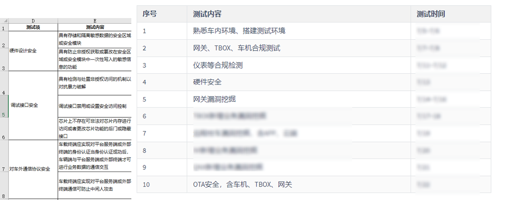
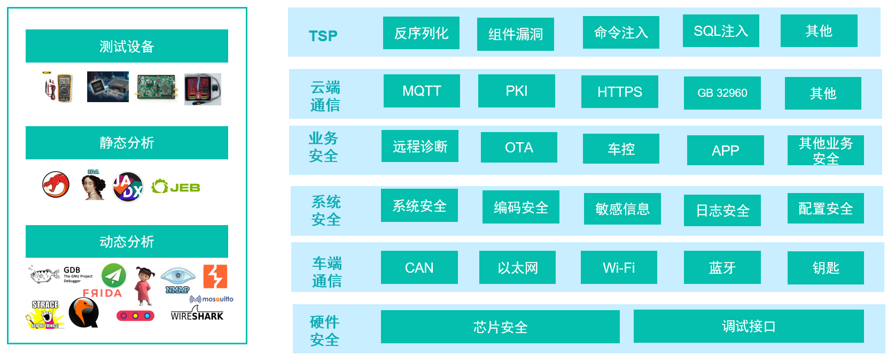
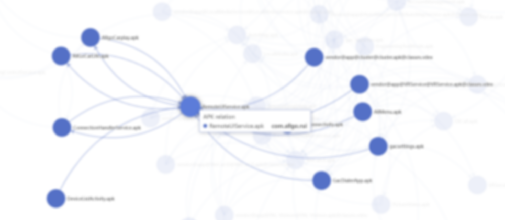

车联网安全进阶之整车渗透测试实践
车联网安全进阶之整车渗透测试实践
渗透测试为大众所熟知，是一个老生常谈的问题，受限于有效的信息与紧迫的项目周期，做好渗透是不容易的。今天和大家分享一下智能网联汽车渗透测试实战中的认识、流程以及注意点等。
渗透测试是模拟真实攻击，旨在对其安全性进行评估。渗透测试人员使用与攻击者相同的工具、技术和流程，来查找和展示车辆的脆弱点对业务带来的影响。渗透测试能够带来以下四点收益。
- 渗透测试有助于确定安全策略的可靠性；
- 识别和降低在设计、开发、应用过程中未被考虑的网络安全问题；
- 支持获得国内国际法律法规要求，作为支撑数据获得认证证书；
- 参考测试结果，为管理者提供当前企业/产品安全态势和预算优先级的定性和定量。
ISO 21434 中提到的将渗透测试列为四种测试方法(功能测试、漏洞扫描、模糊测试、渗透测试)之一。但在实际的渗透测试项目之中，渗透测试有着更加宽泛的定义，漏洞扫描、模糊测试等往往是渗透测试中采用的技术手段之一。
测试方法
WP.29 R155 提到 “车辆制造商应在型式认可之前进行适当和充分的测试，以验证所实施安全措施的有效性”。“进行适当和充分的测试”——在不同的测试目的和预期结果下，采用的测试方法有所不同，这也体现被选择的不同身份角色测试人员，即内部团队和外部安全团队。内部安全团队能够采用黑白灰三种测试方法，而外部安全团队往往采用黑盒测试，部分情况可能涉及灰盒测试的一小部分。
- 白盒测试
白盒测试中渗透测试人员能够获取到所有信息（源代码、二进制、各类设计文档），执行过程多为审计审查（代码审计、文档审查等）。由于资料和数据敏感程度较高，一般只有企业内部团队才有机会开展白盒测试。正如这里说的是有机会，虽然主机厂对整车系统拥有所有权，但对其中的代码并不一定拥有所有权。所以主机厂的安全部门和乙方安全公司一样开展白盒测试的机会相对较少。正因如此，部分甲方安全团队的人员有时候就会造成一种误解，渗透测试只有黑盒，做渗透测试不需要提供任何信息，一切需要渗透测试团队只能自行取得。
- 黑盒测试
黑盒测试中渗透测试人员无法获取车辆系统的内部资料，尝试从任何可能的内外部发起攻击，找到脆弱点。实际开展的项目大多是黑盒，主要信息需要通过逆向分析获得，如IPC/RPC通信方式、私有协议字段定义、OTA升级包分发方式等。
- 灰盒测试
灰盒测试中渗透测试人员对系统有一定的了解，能够获取到设计文档，如算法、系统架构、内部数据结构等。渗透测试人员可以根据详细的设计文档，构建测试用例。内部团队能够获取到的设计文档较多，而外部团队以安全设计规范文档为主。
测试流程
本文是站在乙方视角智能网联汽车渗透测试实践。整个渗透项目的流程与渗透测试标准流程 所定义大体相同，但在智能车场景下，需要做一些调整，添加一些与项目管理、信息收集相关的项。

1. 前期沟通
此阶段包括首次相关相关人员会议，目的是确定渗透测试范围、测试环境、测试规则、资料收集、测试时间以及测试实施人员、测试地点、项目目标等信息。
- 测试对象：零部件或整车
- 测试环境：整车测试是否提供台架；台架有哪些零部件，环境是否完整；
- 测试规则: 开发版或正式版，有无调试权限；硬件是否拆解等；
- 测试时间：确定测试开始的时间与持续时间；
- 测试人员：根据项目与甲方需要确定需要人员数据与技能点；
- 资料收集：与客户沟通获取项目所需的资料，具体内容见 甲方需提供的资料；
- 项目目标：项目完成时需要达到的目标等
2. 前期信息收集
在上阶段中与客户沟通，收到后整理客户提供的资料，对测试对象形成初步映像。以及准备测试设备。
主机厂采用 模块化平台 缩短研发周期，降低研发成本，所以新车上往往有其他已发布的车型的影子。所以无法从客户获取资料（主机厂/供应商提供的信息有限），可以发挥主观能动性，掌握主动权，利用 OSINT 搜集开发泄露资料(企标、代码27算法、DID)，车友圈玩车的方法(任意应用安装)等。

3. 测试环境适应与调整
此阶段开始接触被测设备，首先需要验证被测设备的是否满足测试条件。发现测试台架和测试车辆存在的问题，并联系相关负责人解决。
这一步实在实际测试中，总体来看看似不重要，但实际是影响项目推进的重要因素。理想是美好的，很多情况下客户说环境准备好了，但测试发现环境还是一团糟，由于测试车辆在SOP(Start Of Production，开始量产)之前，不免出现问题，在正式测试之前需要解决存在的问题。以下总结了几个重要的点供参考大家避坑。
硬件问题，高低配版本
测试系统版本，刷新到完整稳定版
软件版本问题，功能不完整
网络问题，Wi-Fi不能开启、蜂窝网络无法连接
账号问题，APP未绑车
停车问题，室内与室外

4. 信息收集
在信息收集阶段要尽量收集关于被测设备软硬件的各种信息（硬件、网络、系统、应用、业务）。
通过表格记录目标的基本信息
通过拆解分析目标使用芯片、调试接口、丝印
获取网络、系统、应用信息梳理出之间的关系并以图形方式呈现，实现团队共享
业务信息梳理，如OTA等

5. 威胁建模
根据上一阶段收集信息的对目标分析后制定测试方案，包括渗透内容、测试路径、测试重点、时间安排、分工与协作等。
资产识别，对信息收集阶段的信息进行汇总分析，识别出需要分析处理的资产。
威胁场景识别，对资产进行初步分析，识别存在的威胁场景。
攻击路径分析，根据对目标设备的信息确定攻击路径。
制定测试方案，根据项目需求和被测目标的实际情况制定。

6. 漏洞挖掘
确定出最可行的攻击通道之后， 考虑如何取得目标系统的访问控制权。 综合分析前几个阶段获取并汇总的情报信息， 找出潜在可被利用的未知安全漏洞， 并开发利用代码。同时展开动态分析，对协议、业务安全进行漏洞挖掘。

7. 漏洞验证
验证静态分析中将所有潜在的漏洞记录并形成利用代码，此次阶段验证这些漏洞是否能够被利用。
- 调试PoC验证Nday
- 验证编码漏洞
- 验证服务漏洞
- 业务漏洞
- 验证其他漏洞
8. 后渗透
在拿到一个模块的权限，确定是否可对目标进行内网渗透和权限维持,通过横向移动发现更多的漏洞。
Android 反弹 Shell 可使用 Msfvenom 生成
扫描其他ECU及开放服务，发现更多的暴露点
内网穿透可使用 FRP，纵深到内网之中，建立通道方便测试
寻找固件残留，固件是重要的数据，尝试分析利用漏洞横向移动
漏洞利用，实现攻击效果，如控制车辆、窃取敏感信息等
最终形成攻击链，拍摄视频/录屏记录
9. 编写报告
通过报告，清晰、简明的向客户传达在渗透测试期间发现的漏洞，以及这些漏洞可能造成的影响。
合规报告，汇总测试项，统计漏洞数量
漏洞挖掘报告，梳理漏洞挖掘情况，整理漏洞挖掘报告
- 过程记录报告，记录过程
10. 回归测试
此阶段中，在客户对本次渗透测试项目中发现的漏洞进行修复后，验证修复方案的健壮性，测试补丁能否被绕过。以及确定是否所有漏洞均进行修复，并记录结果 ，反馈给客户。
思考
随着整车渗透做的越多深度和广度也随之拓展，由于实际情况限制，到了一定程度之后深度和广度的进展愈发缓慢。 时间是影响最大的因素，时间有限且系统复杂，造成渗透测试中的覆盖度往往比较低。怎么才能提高效率呢，增长放缓究其原因是人的精力有限，俗话说”工欲善其事必先利其器”，当下渗透测试中缺乏专业针对性工具，需构建一系列能够提高执行效率、测试覆盖度的工具集，例如下图软件之间的调用关系图,能够可视化的了解程序之家的关联关系。与合规检测工具不一样，渗透测试工具更多的作为 Copilot 起到辅助作用，大家需要什么工具，欢迎一起交流。
